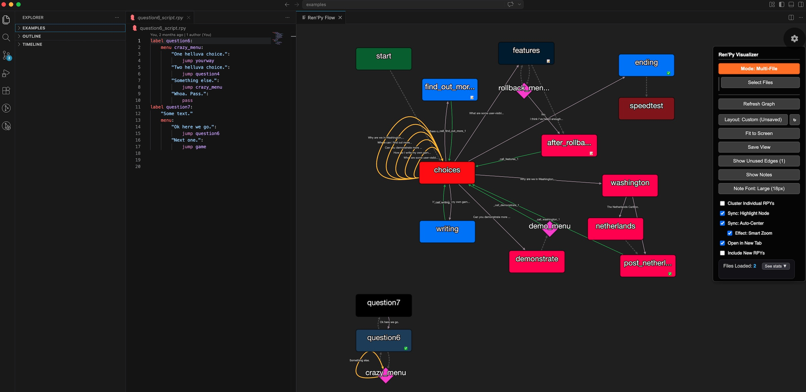

Interactive flow graphs for your Ren'Py game — right inside VS Code.

Visualize labels, menus, jumps, calls, returns, and screens with real-time updates.
Click any node to jump directly to the code. Two-way sync between graph and editor.
Work across many .rpy files with automatic file grouping.
Add colors, notes, completion checks, and flags — saved automatically.
Save your preferred view, switch between flow, grid, and custom positions.
Quickly spot dead ends and return edges.
Install from the VS Code Marketplace (recommended) or download the .vsix directly.
If this tool helps you build better stories, consider supporting development:
Buy me a coffee on Ko-fi